Obrt pruža pouzdane i kvalitetne usluge prijevoza materijala
te distribucije naftnih derivata, uz poštivanje svih sigurnosnih
i zakonskih propisa.
Naša vozila i oprema
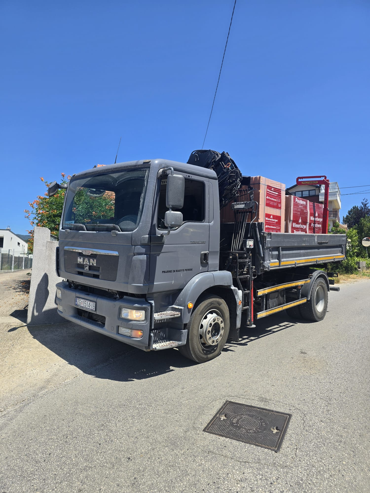
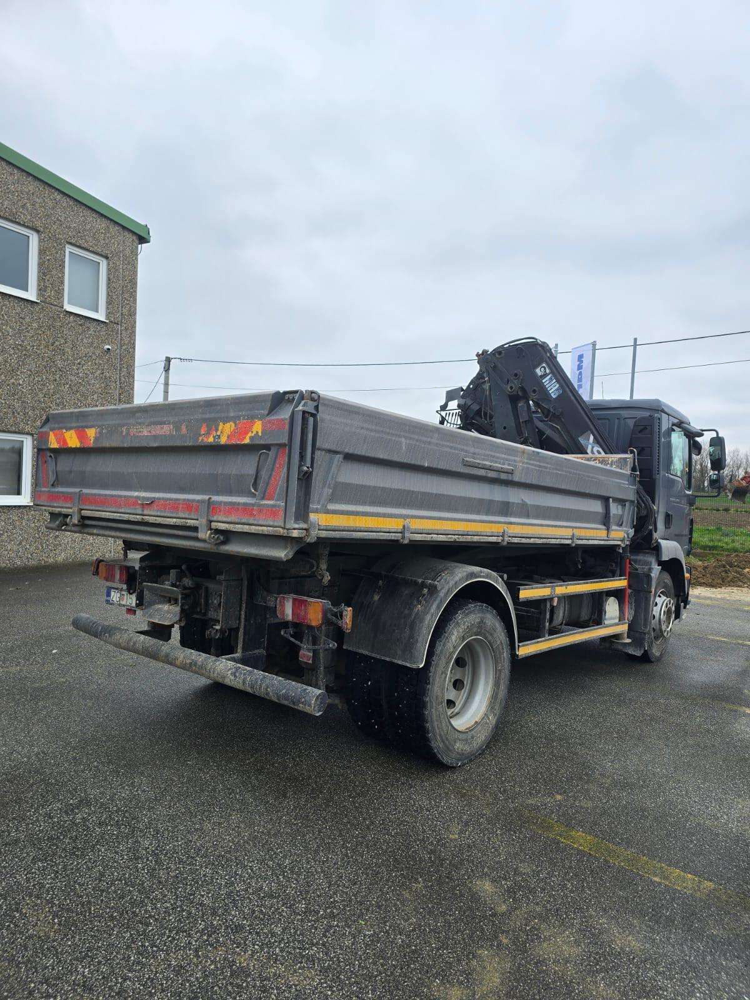
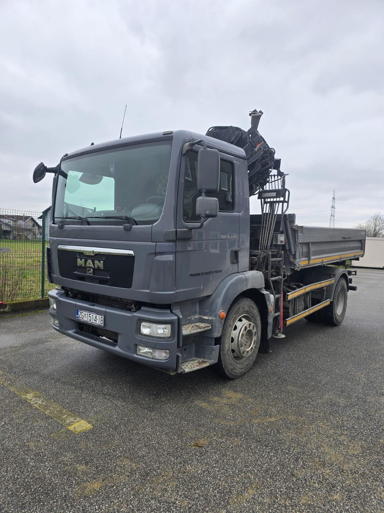
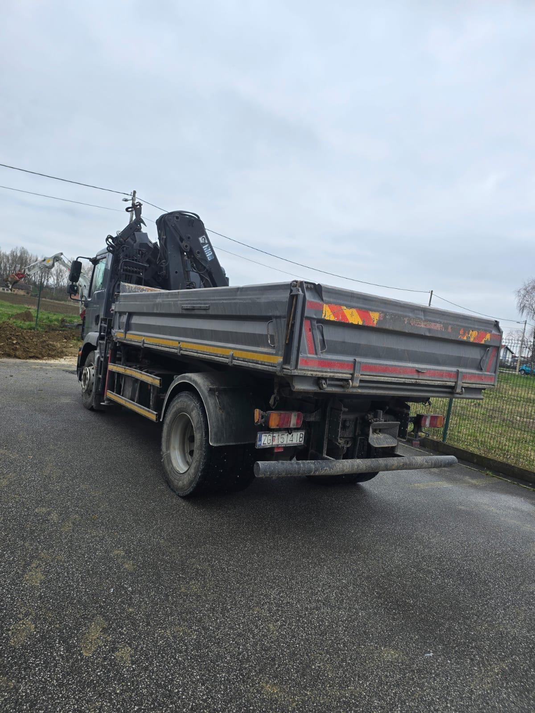
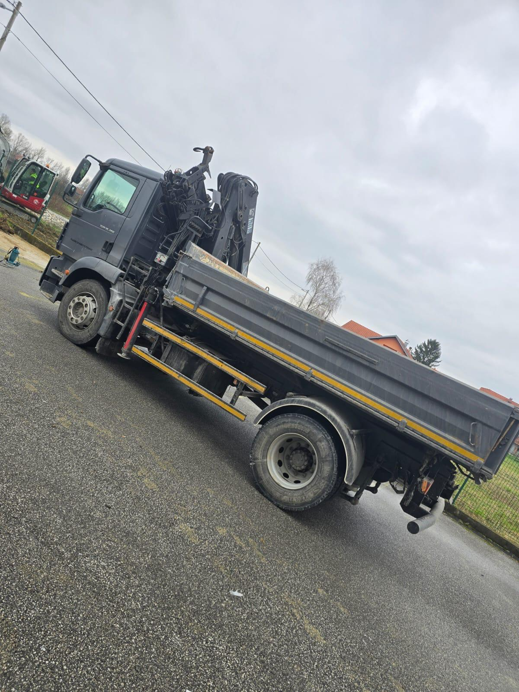
Naš vozni park uključuje moderni kamion s dizalicom,
prilagođen prijevozu rasutog i pakiranog tereta te
distribuciji naftnih derivata.
Distribucija naftnih derivata
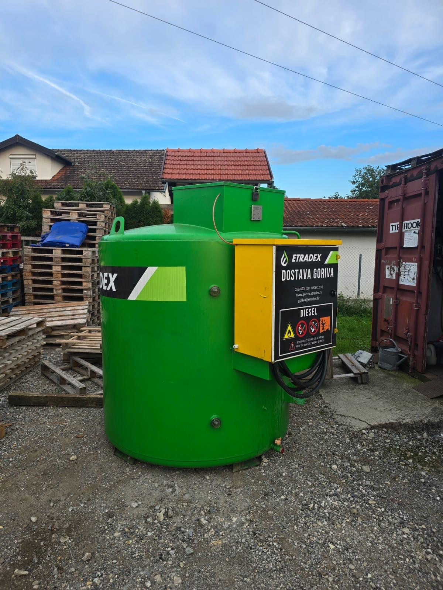
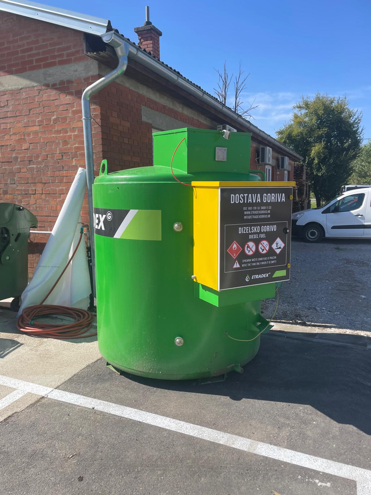
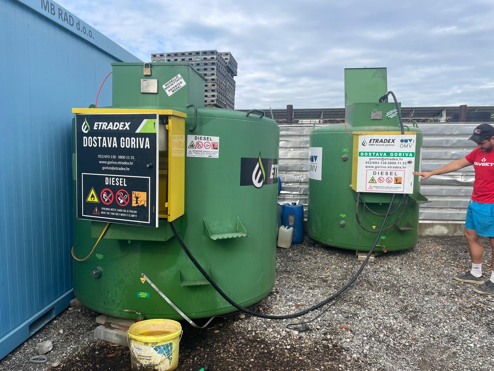
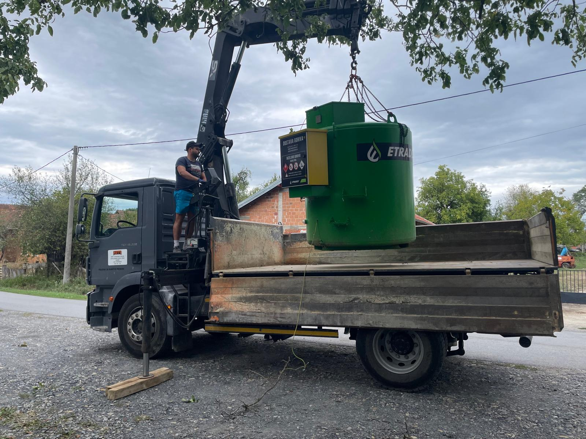
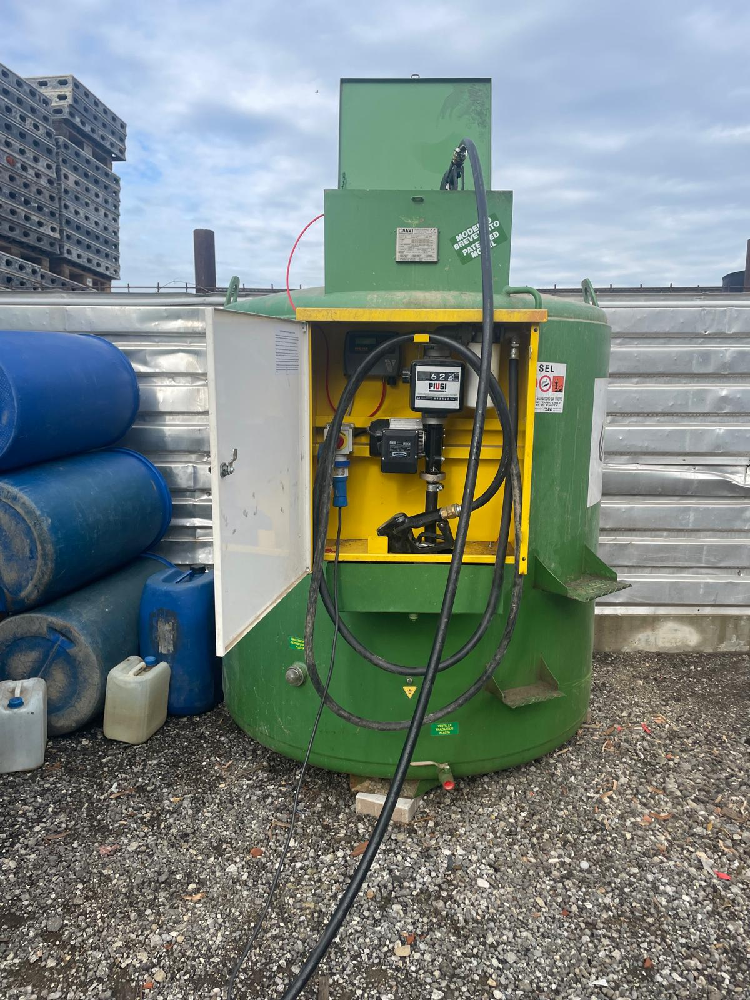
U okviru distribucije naftnih derivata isporučujemo gorivo
i druge naftne proizvode poslovnicama, servisima i
privatnim korisnicima, uz strogo pridržavanje sigurnosnih
pravila i propisa. [web:2][web:3]
Dostava benzina, dizelskog goriva i drugih naftnih proizvoda
Isporuka naftnih derivata do skladišta, radilišta i trgovina
Dogovorena redovita i povremena dostava prema potrebama klijenata
Rad s dizalicom i oprema
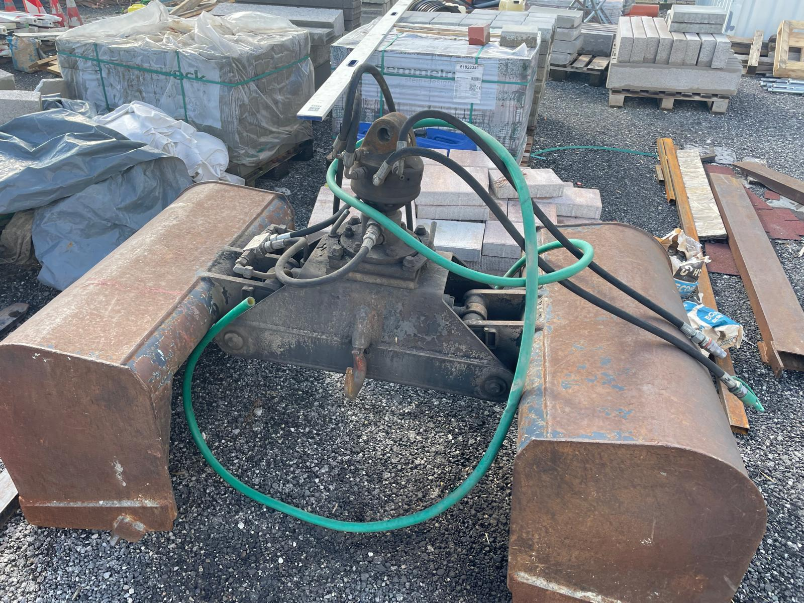
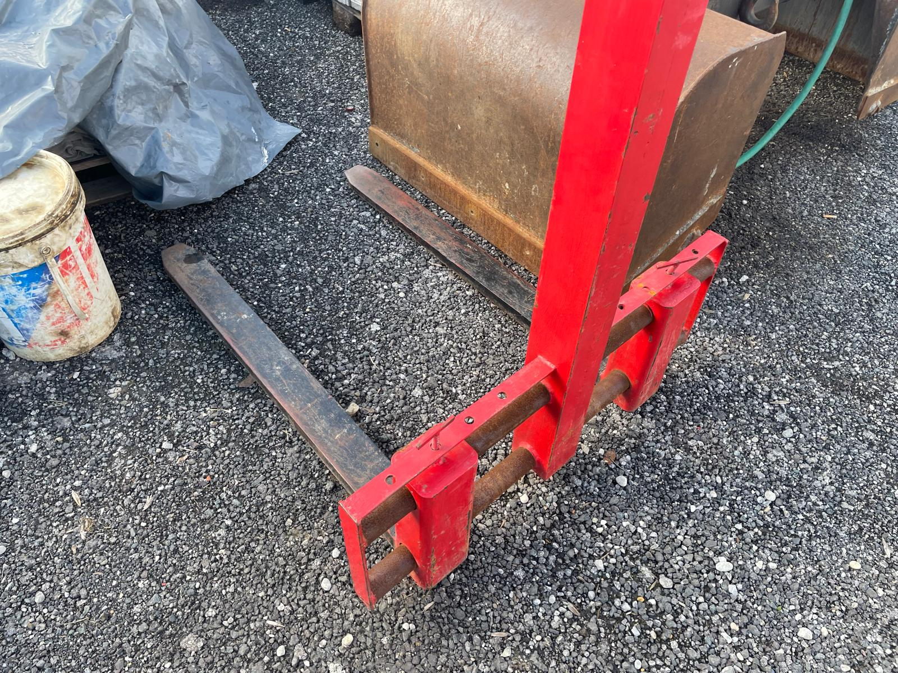
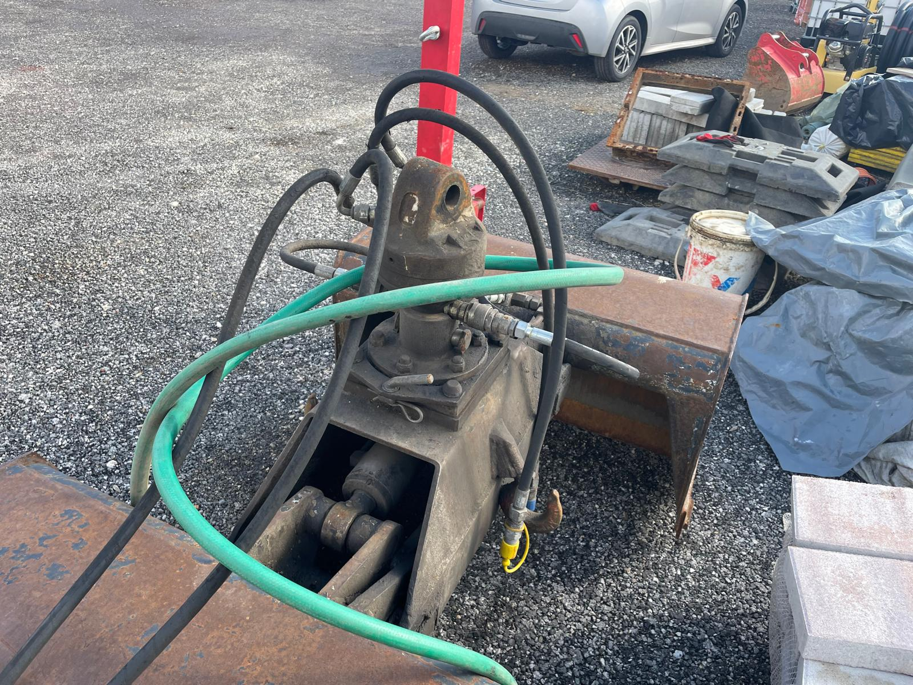
Naše vozilo s ugrađenom dizalicom omogućuje rukovanje
i premještanje teškog pakiranog tereta direktno na
radnom mjestu, bez dodatne opreme i dodatnih prevoza.
Otpakiravanje i premještanje tereta s kamiona na palete
Rukovanje rasutim i pakiranim materijalom na građevinskim
i industrijskim lokacijama
Brza i pouzdana usluga prilagođena vašem vremenskom roku
Prijevoz materijala
Pružamo uslugu prijevoza različitih vrsta materijala,
uključujući građevinski i industrijski materijal.
Prijevoz građevinskog materijala (npr. pijeska, šljunka
i betonskih mješavina)
Prijevoz paletirane i druge pakirane robe
Prijevoz rasutog tereta u većim količinama
Fleksibilni i dogovoreni termini isporuke
Dodatne usluge
Organizacija hitnih isporuka u kratkom roku
Individualni dogovor s klijentima o načinu i vremenu isporuke